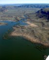
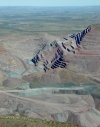
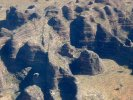
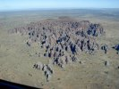
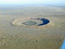
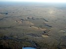
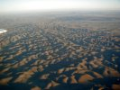

June
- 2nd
- 3rd
- 4th
- 5th
- 6th
- 7th
- 8th
- 9th
- 10th
- 11th
- 12th
- 13th
- 14th
- 15th
- 16th
- 17th
- 18th
- 19th
- 20th
- 21st
- 22nd
- 23rd
- 24th
- 25th
- 26th
- 27th
- 28th
- 29th
- 30th
July
- 1st
- 2nd
- 3rd
- 4th
- 5th
- 6th
- 7th
- 8th
- 9th
- 10th
- 11th
- 12th
- 13th
- 14th
- 15th
- 16th
- 17th
- 18th
- 19th
- 20th
- 21st
- 22nd
- 23rd
- 24th
- 25th
- 26th
- 27th
- 28th
- 29th
- 30th
- 31st
August

{kind=link}
Then we tried to call a car
 
{kind=link}
{kind=link}

{kind=link}
Landing at Argyle and getting a tour of the world's biggest diamond mine (produces 35% of the world's diamonds) was, according to our host, who tried to help us as good as possible, not possibility either. The guy who would have to give us a landing permission for the

{kind=link}
We have had many lucky days - this certainly wasn't one of them!
It didn't really help that each of us was getting more and more stressed about our situation in general, but for different reasons in particular. Linda and I got annoyed with the money-vultures (also called tour operators) and tried to find alternatives while Edlef got disgruntled that we didn't make a decision and went flying.
Not a very good start of the day!

{kind=link}
Shortly after noon the rolling call was finally made - by Edlef, who would be the pilot for this day.
When Edlef made his departure call for the Kununurra MBZ, the pilot of the inbound aircraft MAX answered "Mr. Bucka-Lassen, is that you?" I got very excited as I recognised his voice. It was Anders (calls himself Andrew here in Australia), the Swedish instructor from Jandakot Flight Centre. Funny to 'run into' him up here.

{kind=link}
Fitzroy Crossing was a bit of a culture chock. The Crossing Inn, where we had booked accommodation, is not only a motel but also the one and only local pub and bottle shop - the oldest in the Kimberley by the way. It is heavily used by Aboriginals. Beers were bought in cartons. But there was nothing to worry about - they took hardly notice of us and didn't seem aggressive at all.
My dad and I had a bit of a discussion that evening. By the time it was over the restaurant had closed. The only thing that we could find was a hamburger and a chicken roll from the bottle shop - terrible stuff.
Was it the correct decision not to take a Bungle Bungle tour? I'm still not sure. Some days later I spoke to a woman that had lived in Kununurra for many years. Her words were that the only way to see the Bungle Bungle is from the air. Especially as the 4WD tracks in the park never reach the eastern and most interesting side. However, I still would have liked to see the Bungle Bungle from the ground - next time perhaps.